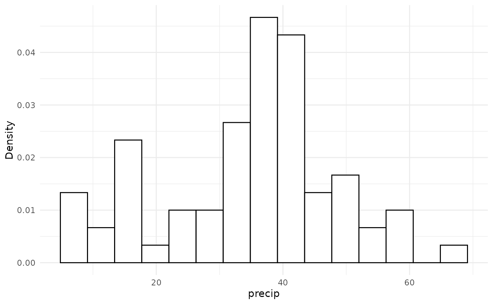
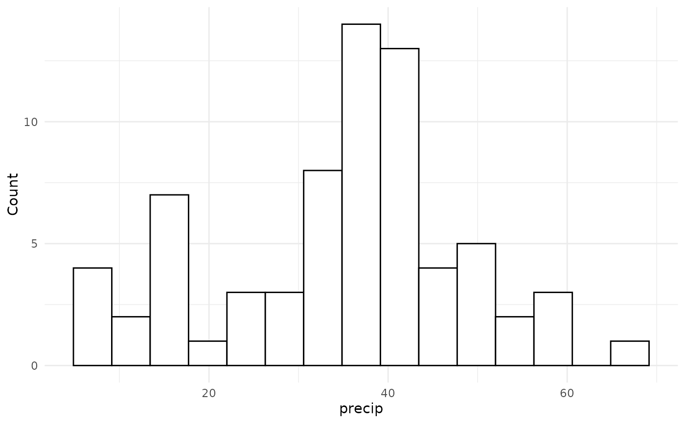
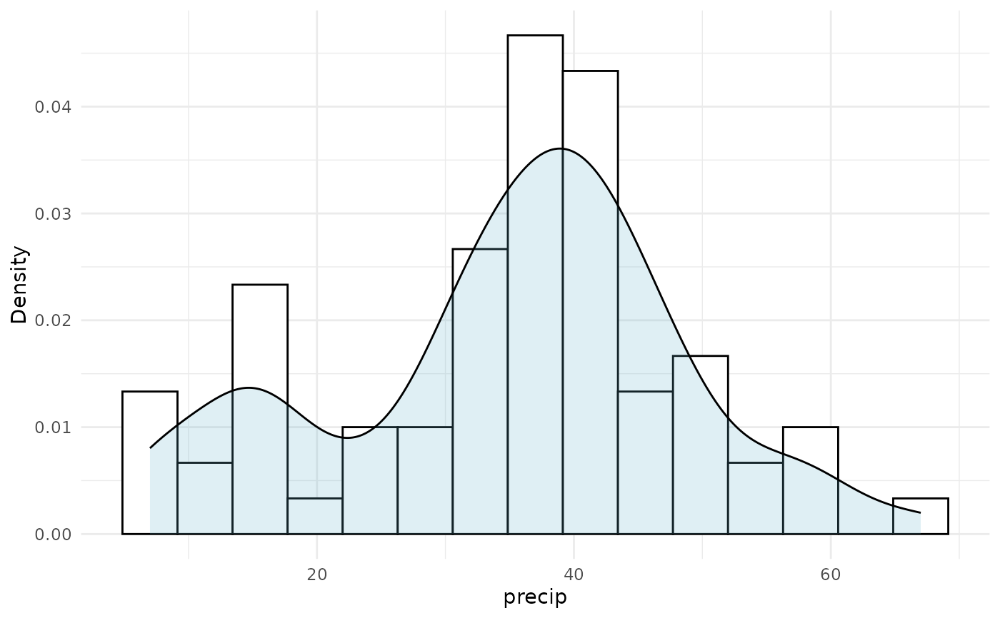
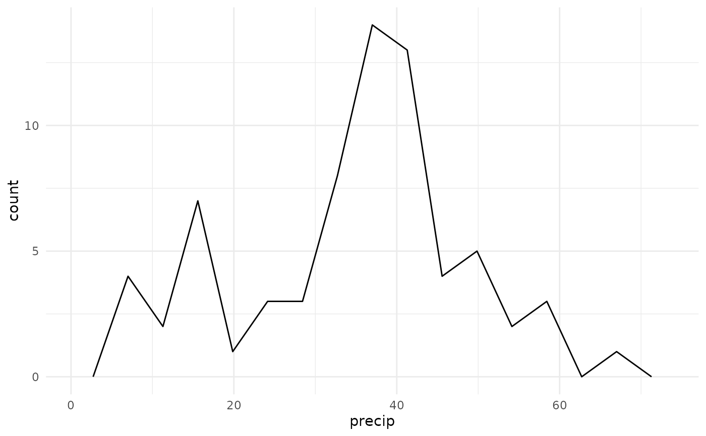

Generates plots for TaskDens.
Usage
# S3 method for class 'TaskDens'
autoplot(object, type = "dens", theme = theme_minimal(), ...)Arguments
- object
(TaskDens).
- type
(
character(1))
Type of the plot. Available choices:"dens": histogram density estimator (default) withggplot2::geom_histogram()."freq": histogram frequency plot withggplot2::geom_histogram()."overlay": histogram with overlaid density plot withggplot2::geom_histogram()andggplot2::geom_density()."freqpoly": frequency polygon plot with ggplot2::geom_freqpoly.
- theme
(
ggplot2::theme())
Theggplot2::theme_minimal()is applied by default to all plots.- ...
(
any)
Additional arguments, possibly passed down to the underlying plot functions.
Value
ggplot2::ggplot() object.
Examples
library(ggplot2)
task = tsk("precip")
task$head()
#> precip
#> <num>
#> 1: 67.0
#> 2: 54.7
#> 3: 7.0
#> 4: 48.5
#> 5: 14.0
#> 6: 17.2
autoplot(task, bins = 15)
#> Warning: Arguments in `...` must be used.
#> ✖ Problematic argument:
#> • bins = 15
#> ℹ Did you misspell an argument name?

autoplot(task, type = "freq", bins = 15)
#> Warning: Arguments in `...` must be used.
#> ✖ Problematic argument:
#> • bins = 15
#> ℹ Did you misspell an argument name?

autoplot(task, type = "overlay", bins = 15)
#> Warning: Arguments in `...` must be used.
#> ✖ Problematic argument:
#> • bins = 15
#> ℹ Did you misspell an argument name?

autoplot(task, type = "freqpoly", bins = 15)
#> Warning: Arguments in `...` must be used.
#> ✖ Problematic argument:
#> • bins = 15
#> ℹ Did you misspell an argument name?
